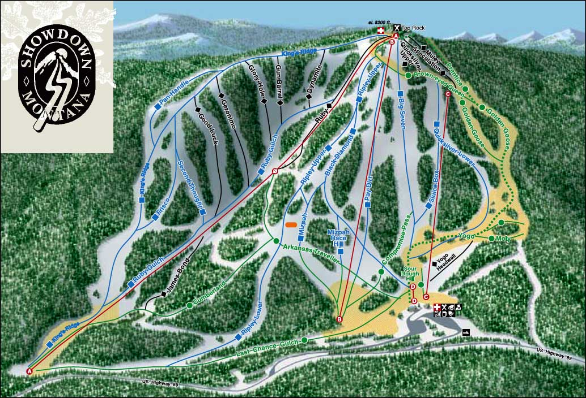

 Showdown is donating a portion of our proceeds from this weekend, February 12th & 13th, to the Weir Family. We will be accepting donations at every register and you can also donate to the Weir family on our website through our Online Store with 100% of all donations going to the Weir family. Our goal is to beat last year's fundraiser; $26,000!
Opening Day: December 17, 2021
Open every day Dec 17- Jan. 2 except Christmas
Closed Mondays and Tuesdays starting Jan.3 through closing day.
Open MLK Jr. Day Monday, Jan. 17th
Open Presidents Day Monday, Feb. 21st
Closing Day: April 3, 2022